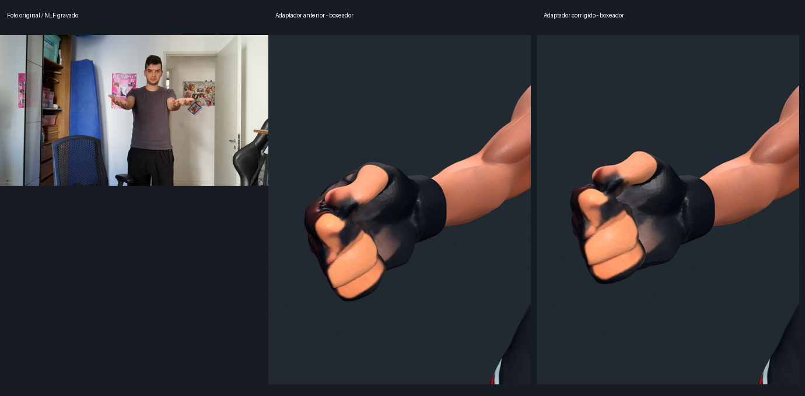
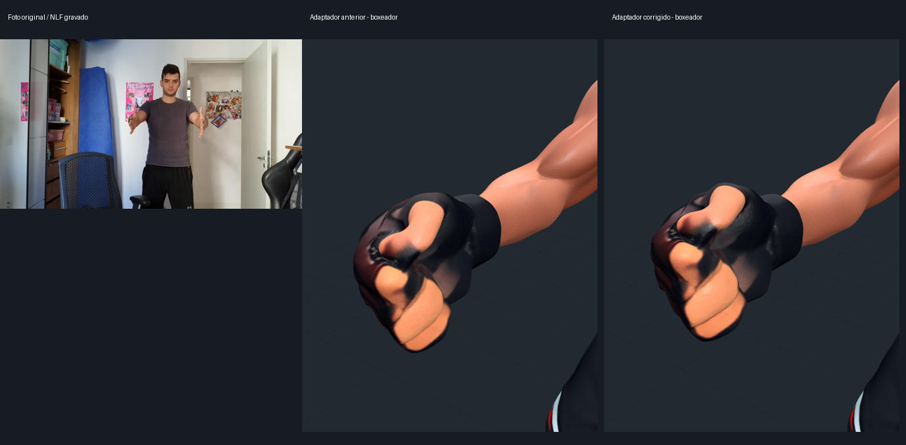
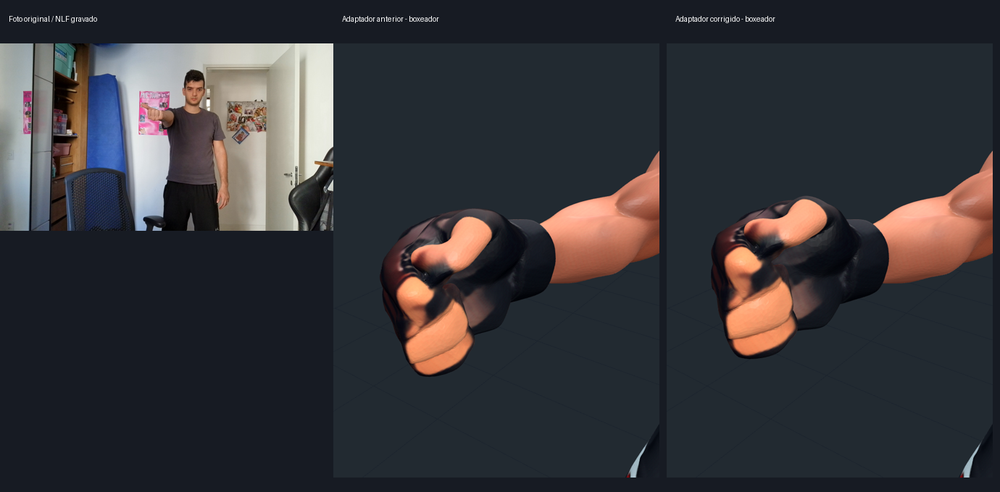
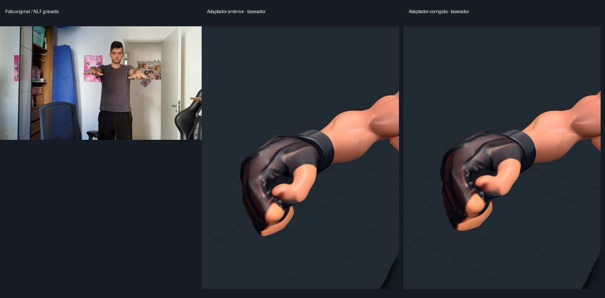
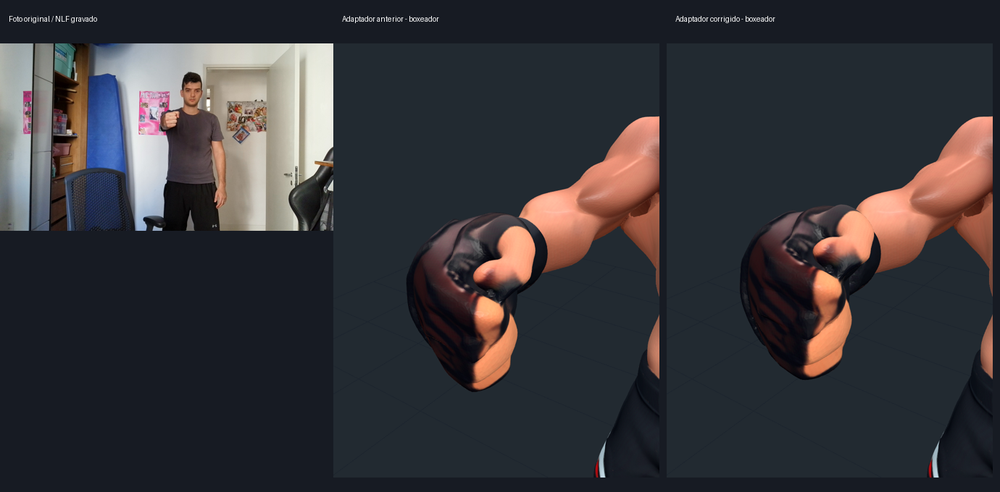
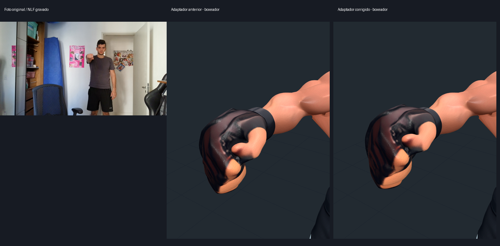
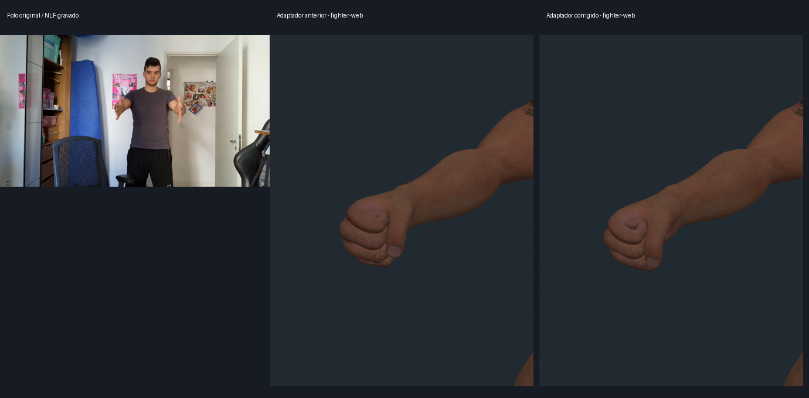
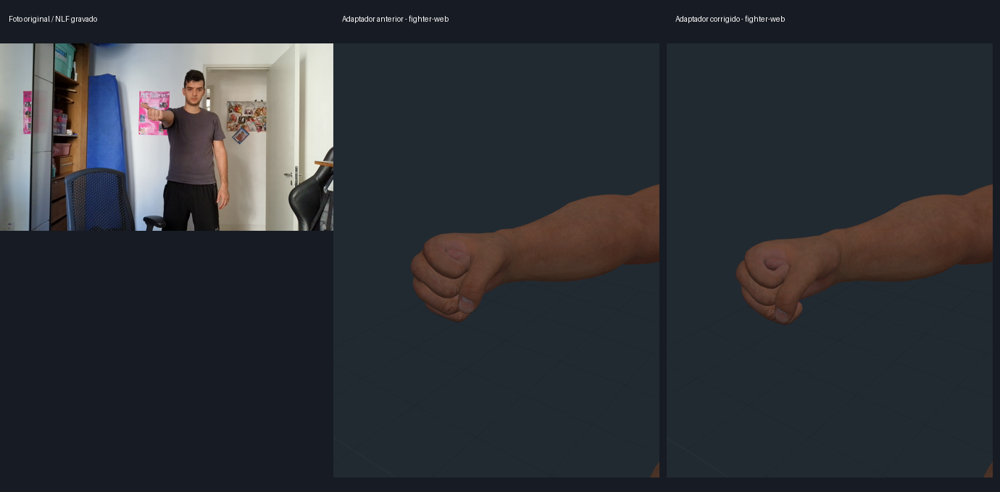
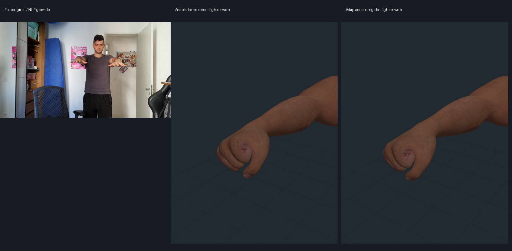
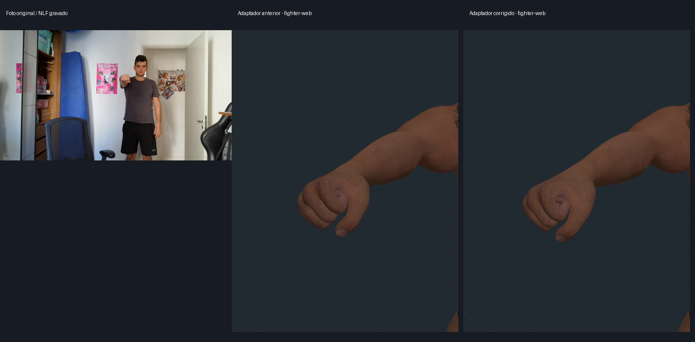

Adaptador pose → 3D: antes e depois
Mesmos pontos gravados do NLF. Close-up da mão direita anatômica. Foto original sem espelho, versão anterior e versão corrigida. O teste avalia a tradução; erros do NLF e dedos em repouso continuam presentes.
boxeador_01_maos_abertas_ambas_palmas_cima_compare

boxeador_02_maos_abertas_ambas_palmas_lado_interno_compare

boxeador_03_punho_direito_fechado_palma_cima_polegar_estendido_compare

boxeador_04_maos_abertas_ambas_palmas_baixo_compare

boxeador_05_punho_direito_fechado_palma_lado_interno_compare

boxeador_06_punho_direito_fechado_palma_baixo_compare

fighter-web_01_maos_abertas_ambas_palmas_cima_compare
fighter-web_02_maos_abertas_ambas_palmas_lado_interno_compare

fighter-web_03_punho_direito_fechado_palma_cima_polegar_estendido_compare

fighter-web_04_maos_abertas_ambas_palmas_baixo_compare

fighter-web_05_punho_direito_fechado_palma_lado_interno_compare
fighter-web_06_punho_direito_fechado_palma_baixo_compare
